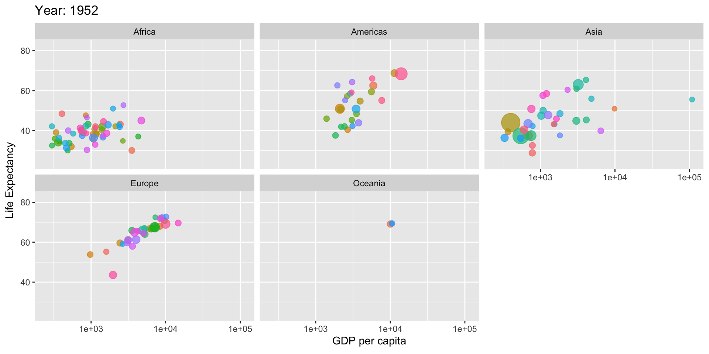

MGMT 17300: Data Mining Lab
Introduction to R and RStudio
August 01, 2024
Overview
- Motivation
- Why R and RStudio?
- Projects and version control
- Using R
- Scripts, objects
- Functions
- Data types
- Dataframes
- Logical operators
- Where to find Help?
Motivation
Motivation
What is Data Science?
“An iterative process of augmenting human thinking with computational tools to use data to make decisions in/about the world”
Pipeline

Why R and RStudio?
Why R?
- Open-source programming language
- Built by statisticians (both a good and bad thing)
- Large community
Community
Why RStudio?
Why R and RStudio?

Projects and version control
Projects and Version Control
GitHub

GitHadley
Project Approach
Projects and Version Control: References
Are there more benefits?

Using R
Using R as a Calculator!
Scripts and objects
Objects: Variables and Vectors
Vectors
Note that when combining numbers and text, all elements turn into text. We will discuss text handling more later.
Style
“Programs must be written for people to read, and only incidentally for machines to execute.”
— Hal Abelson
Style
It is recommended that object names be descriptive. Additionally, adopting a programming style for your data analysis is valuable. It facilitates human reading and interpretation of the code. Let’s look at object names from r4ds. Which one is better?
The tidyverse style guide
The tidyverse style guide: this guide not only presents good practices and programming style but is accompanied by two packages that help data scientists maintain code consistency.
Functions
Functions
Functions are the workhorse of statistical programming in R. Many of the analyses we will perform are based on using the correct functions and identifying the appropriate arguments for each case.
We have already seen some examples of functions:
The main use of functions is to automate operations that would take a long time to do manually, be prone to errors, or simply be tedious. For this reason, functions are developed in packages.
Functions
For example, if we need to find the mean between two numbers, we could do the calculation manually:
But if we had 1000 numbers instead of 2, this process would be extremely long and tiring. So, we can simply use the mean() function to calculate the average of all numbers from 1 to 1000:
Functions
R has countless functions for doing all kinds of calculations that you can imagine (and even those you can’t). As you progress in using R, there will be specific tasks for which no existing function is satisfactory. In these moments, the advantage of R being a programming language becomes evident — we can create our own functions.
For now, let’s explore some of the functions that already exist in R. Did you notice that I didn’t need to type all the numbers from 1 to 1000 in the previous example?
Much easier than numbers <- c(1, 2, 3, ..., 1000).
Functions
But what if I wanted to find the mean of the odd numbers from 1 to 1000? Would I need to type the numbers one by one?
In these moments, remember that laziness is one of the traits that separates good programmers from the rest. Almost all tedious and repetitive tasks in programming can be automated in some way.
Obviously, R has the seq() function that allows us to create a vector of odd numbers. Notice how the arguments of the function are used:
Functions
R comes pre-installed with several statistical functions — after all, this is one of its main purposes. Besides the mean() function, which we saw earlier, let’s also look at other descriptive statistics:
The summary() command gives us an overview of this vector:
Data Types
Data Types
Programming languages store variables under different classes. Today, we will have a general discussion about them so that you know they exist, and we will go into details throughout the course.
- Numeric values:
double,integer - Text:
character - Factors:
factor - Logical values:
logical - Special values:
NA,NULL,Inf,NaN
To discover the type of an object, you can use the typeof() function.
Dataframes
Dataframes
We can think of dataframes as collections of vectors placed side by side. It is by far the most used format for data analysis and processing.
names <- c("Mary", "Davi", "Juliana", "Gabriel")
major <- c("Engineering", "Political Science", "Business", "Economy")
time_at_company <- c(3, 10, 10, 1)
team <- data.frame(names, major, time_at_company)
nrow(team) # number of rows
ncol(team) # number of columns
head(team) # first observations
summary(team) # summary of dataR also supports other data structures like matrices and lists, which we will cover as needed.
Data Tidying

Observations in rows
Attributes in columns
Values in cells
Subsetting Vectors
The tools we will now see are used to “pinpoint” information stored in R’s memory. Returning to the vector of odd numbers we created earlier, suppose I want to know the value of the 287th element:
We can expand the [ operator for various selections, as needed:
Subsetting Dataframes
The use of the [ operator is similar for dataframes, but we need to pay attention to rows and columns:
For dataframes, it is very common to use the $ operator to select columns:
Logical operators
Logical Operators
For more complex selections, it is common to rely on logical operators.

Logical Operators
The most common are & and |, but all relational operators are also recognized:
==(equal to)!=(not equal to)>(greater than)<(less than)>=(greater than or equal to)<=(less than or equal to).
team[team$time_at_company == 10,] # only people with 10 years at the company
team[team$time_at_company < 5,] # only people with less than 5 years at the company
team[team$time_at_company < 5 | team$major == "Business",] # less than 5 years at the company OR in and specific area
team[team$time_at_company > 2 & team$time_at_company < 5,] # between 2 and 5 years at the companyWhere to find Help?
Where to find Help?
The sum() function is often useful. It allows you to sum vectors. Let’s take the opportunity to consult the documentation of this function through another function, ?.
Where to find Help?

Where to find Help?
Besides R’s official documentation, a very valuable resource is Stack Overflow.

Where to find Help?
| Claude AI | ChatGPT | Copilot AI | GitHub Copilot | Cursor AI |
Where to find Help?

Where to find Help?

Summary
Summary
Why use R?
- Open-source programming language
- Built by statisticians, with a large community
- Integrated environment with RStudio
- Importance of managing projects and versioning with Git and GitHub
- Useful resources for learning version control with RStudio
Functions in R
- Automating tasks with functions
- Predefined functions (e.g.,
mean(),sd(),summary()) - Creating custom functions for specific tasks
Data Structures
- Data types in R: numeric, text, factors, logical values
- Dataframes: the most used data structure for analysis
Thank you!
Data Mining Lab